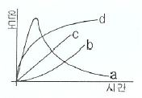
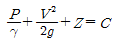
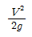
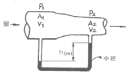
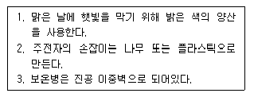

소방설비기사(기계분야) (2006-09-10 기출문제)
1과목: 소방원론
1. Flash over를 가장 바르게 표현한 것은?
- 소화현상이다.
- 건물 외부에서 연소가스의 폭발적인 방출현상이다.
- 폭발적인 화재의 확대현상이다.
- 폭발 및 건물의 붕괴현상이다.
(정답률: 64%)

2. 황린과 적린이 서로 동소체라는 것을 증명하는데 가장 효과적인 실험은?
- 비중을 비교한다.
- 착화점을 비교한다.
- 유기용제에 대한 용해도를 비교한다.
- 연소 생성물을 확인한다.
(정답률: 55%)
3. 그림에서 내화조 건물의 화재온도 및 시간 표준곡선은?

- a
- b
- c
- d
(정답률: 53%)
4. 다음 알코올 중 위험물에 속하지 않는 것은?
- 에틸알코올
- 부틸알코올
- 메틸알코올
- 프로필알코올
(정답률: 31%)
5. 순수한 액화석유가스(LPG)의 일반적 성질에 대한 설명으로 잘못된 것은?
- 휘발유 등 유기용매에 녹는다.
- 액화하면 물보다 가볍다.
- 액화석유가스 증기는 공기보다 무겁다.
- 무색으로 독특한 냄새가 있다.
(정답률: 42%)
6. 제1종 분말 소화약제인 중탄산나트륨은 어떤 색으로 착색되어 있는가?
- 백색
- 담회색
- 담홍색
- 회색
(정답률: 53%)
7. 화재의 종류에서 급수는 C급이며 화재의 종류는 전기화재이다. 표시 색은?
- 백색
- 황색
- 무색
- 청색
(정답률: 59%)
8. 페놀수지, 멜라민수지 등이 연소될 때 발생되며 눈, 코, 인후 및 폐에 매우 자극성이 큰 유독성 가스는?
- CO2
- SO2
- HBr
- NH3
(정답률: 25%)
9. 다음 중 연소범위가 가장 넓은 물질은?
- 아세틸렌
- 에틸렌
- 이황화탄소
- 메탄
(정답률: 49%)
10. 표준상태에서 11.2L의 기체질량이 22g이었다면 이 기체의 분자량은 얼마인가? (단, 이상기체라고 한다.)
- 22
- 35
- 44
- 56
(정답률: 55%)
11. 화재발생시 피난기구로 직접 활용할 수 없는 것은?
- 완강기
- 무선통신보조설비
- 피난사다리
- 구조대
(정답률: 58%)
12. 연소를 이루기 위한 열원으로서 전기에너지가 아닌 것은?
- 아크열
- 유도열
- 마찰열
- 저항열
(정답률: 62%)
13. 제1류 위험물로 그 성질이 산화성 고체인 것은?
- 황린
- 아염소산염류
- 금속분류
- 유황
(정답률: 55%)
14. 자연발화의 예방을 위한 대책으로 옳지 않은 것은?
- 통풍이나 환기로 열의 축적을 방지한다.
- 주위 온도를 낮게 하여 반응계에 이상이 생기지 않도록 한다.
- 열전도성을 나쁘게 한다.
- 칼륨 등 석유 중에 보관하는 물질은 용기가 파손 되지 않도록 한다.
(정답률: 46%)
15. Stack Effect란?
- 굴뚝효과
- 연소 저지효과
- 연기 유동효과
- 화염 전파효과
(정답률: 40%)
16. 화재 표면온도가 2배로 되면 복사에너지는 몇 배로 증가되는가?
- 2
- 4
- 8
- 16
(정답률: 58%)
17. 소화(消火)의 원리에 해당하지 않는 것은?
- 산소공급원의 농도를 낮추어 연소가 지속될 수 없도록 한다.
- 가연성 물질을 발화점 이하로 냉각시킨다.
- 가열원을 계속 공급한다.
- 화학적인 방법으로 연쇄반응을 억제시킨다.
(정답률: 64%)
18. 건물화재시 패닉(panic)의 발생원인과 직접적인 관계가 없는 것은?
- 연기에 의한 시계 제한
- 유독가스에 의한 호흡 장애
- 외부와 단절되어 고립
- 건물의 불연 내장재
(정답률: 68%)
19. 공기의 평균 분자량이 29 라 할 때 이산화탄소의 증기 비중은 약 얼마인가?
- 1.44
- 1.52
- 2.88
- 3.24
(정답률: 65%)
20. 물의 소화력을 보강하기 위해 첨가하는 약제로서 물의 표면장력을 낮추어 침투효과를 높이기 위한 첨가제는?
- 증점제
- 강화액
- 침투제
- 유화제
(정답률: 40%)
2과목: 소방유체역학
21. 난류 흐름에서 관마찰계수에 영향을 미치는 요소가 아닌 것은?
- 관내경
- 관내 압력
- 관내 표면조도
- 유체의 점성
(정답률: 34%)
22. 다음 중 비압축성 유체에 대한 설명으로 틀린 것은?
- 밀도가 압력에 의해 변하지 않는 유체이다.
- 굴뚝 둘레를 흐르는 공기 흐름이다.
- 정지된 자동차 주위의 공기 흐름이다.
- 음속보다 빠른 비행체 주위의 공기 흐름이다.
(정답률: 27%)
23. 다음 물질 중 소화에 필요한 CO2량이 가장 많이 소요되는 것은?
- 에틸알콜
- 메틸알콜
- 아세톤
- 아세틸렌
(정답률: 52%)
24. 양정 220m, 유량 0.025m3 /s, 회전수 2900rpm인 4단 원심 펌프의 비교회전도(비속도)는 얼마인가?
- 176
- 167
- 45
- 23
(정답률: 13%)
25. 비중량이 9980 N/m3 인 유체가 소화설비 배관 내를 분당 50kN 씩 흐른다. 관경이 150mm 라면 평균유속은 몇 m/s 인가?
- 3.1
- 4.73
- 83.3
- 283.8
(정답률: 17%)
26. 포소화설비의 화재 적응성이 가장 낮은 대상물은?
- 건축물
- 가연성 고체류
- 가연성 가스
- 가연성 액체류
(정답률: 46%)
27. 폴리트로픽 변화의 일반식(pvn = 정수)에서 n = 0 이면 어느 변화인가?
- 등압변화
- 등온변화
- 단열변화
- 폴리트로픽 팽창
(정답률: 26%)
28. 베르누이의 식

에서
은 무엇을 표시하며, 단위는 무엇인가?- 압력수두, m/s
- 속도수두, m
- 위치수두, m
- 동압, N/m2
(정답률: 47%)
29. 표준대기압(101.3 kPa) 상태인 어떤 지방의 호수에서 지름이 d[cm]인 공기의 기포가 수면으로 올라오면서 지름이 2배로 팽창하였다. 이때 최초의 기포 위치는 수면으로부터 몇 m 인가? (단, 기포 내의 공기는 Boyle의 법칙에 따른다.)
- 62.1
- 72.3
- 82.7
- 93.0
(정답률: 27%)
30. 원심펌프의 공동현상(cavitation) 방지대책과 거리가 먼 것은?
- 펌프의 설치위치를 낮춘다.
- 펌프의 회전수를 높인다.
- 흡입관의 관경을 크게 한다.
- 단흡입 펌프는 양흡입 펌프로 바꾼다.
(정답률: 42%)
31. 무게가 90N 으로 측정된 돌이 물에 잠기면 무게가 50N 으로 측정 된다. 이 돌의 체적과 비중은 각각 얼마인가?
- 0.004m3 ,2.25
- 0.01m3, 1.0
- 0.007m3 ,2.25
- 0.07m3, 3.75
(정답률: 32%)
32. 관로의 다음과 같은 변화 중 부차적 손실에 속하지 않는 것은?
- 관로의 급격한 확대
- 부속품 설치
- 관로의 급격한 축소
- 관로의 마찰
(정답률: 35%)
33. 그림에서와 같이 단면 1, 2 에서의 수은의 높이 차가 h(m)이다. 압력차 P1 - P2 는 몇 Pa인가? (단, 축소관에서의 부차적 손실은 무시하고 수은의 비중은 13.5, 물의 비중은 1 이다.)

- 122500h
- 12.25h
- 132500h
- 13.25h
(정답률: 39%)
34. 간극에 액체가 채워진 동심 2중 원통의 안쪽 원통을 도르래와 낙하하는 추에 의하여 회전시킬 때 액체의 점성에 의한 토크와 낙하 추의 토크가 균형을 이루는 각속도를 측정하여 액체의 점도를 측정하는 것이 회전 원통 점도계다. 이 점도계에서 점도(점성계수)와 각속도의 관계는?
- 점도는 각속도의 제곱에 반비례한다.
- 점도는 각속도에 반비례한다.
- 점도는 각속도의 제곱근에 비례한다.
- 점도는 각속도에 비례한다.
(정답률: 22%)
35. 분말 소화설비에 있어 분말 소화약제의 가압용 가스로 가장 많이 쓰이는 것은?
- 산소
- 염소
- 아르곤
- 질소
(정답률: 48%)
36. 다음 중 점성계수의 차원은? (단, F는 힘, L은 길이, T는 시간의 차원이다.)
- FT-1L-2
- FT2L3
- FTL-2
- FTL-1
(정답률: 15%)
37. 할로겐화합물 소화약제의 공통적인 특성 중 틀린 것은?
- 전기 절연성이 크다.
- 변질, 분해되지 않는다.
- 금속에 대한 부식성이 적다.
- 소화시 열분해가 일어나지 않으며 인체에 독성이 없다.
(정답률: 40%)
38. 직경 25cm의 매끈한 원관을 통해서 물을 초당 100L를 수송하고 있다. 관의 길이 5m 에 대한 손실수두는? (단, 관마찰 계수 f는 0.03이다.)
- 약 0.013m
- 약 0.13m
- 약 1.3m
- 약 13m
(정답률: 30%)
39. 전체 높이가 2m 인 수조에서 밑면으로부터 높이가 10cm인 옆면에 지름 16mm의 구멍을 뚫었다. 이 구멍으로부터 물이 2m/s의 속도로 분출되고 있다면 이 순간 수조내의 수면의 높이는 밑면으로부터 몇 m 인가? (단, 이 구멍에서의 속도계수는 0.97 이다.)
- 0.217
- 0.293
- 0.3⑤
- 0.317
(정답률: 16%)
40. 다음은 열의 이동을 막기 위해 쓰이는 방법의 예이다. 위의 설명과 관련이 깊은 열전달 방식을 바르게 나열한 것은?

- 1 = 대류, 2 = 전도, 3 = 복사
- 1 = 복사, 2 = 전도, 3 = 대류
- 1 = 대류, 2 = 전도, 3 = 전도
- 1 = 복사, 2 = 대류, 3 = 전도
(정답률: 43%)
3과목: 소방관계법규
41. 다음 중 상주공사감리 대상에 대한 설명으로 알맞은 것은?
- 연면적 30,000m2 이상의 특정소방대상물에 대한 소방시설 공사
- 지하층을 제외한 층수가 16층 이상인 건축물에 대한 소방시설 공사
- 지하층을 제외한 700세대 이상인 아파트에 대한 소방시설 공사
- 지하층을 제외한 층수가 16층 이상으로 900세대 이상인 아파트에 대한 소방시설 공사
(정답률: 34%)
42. 소방대(消防隊)에 해당 되지 않는 사람은?
- 소방공무원
- 의무소방원
- 자체소방대원
- 의용소방대원
(정답률: 63%)
43. 소방기술자는 동시에 몇 개의 사업체에 취업이 가능한가?
- 1개
- 2개
- 3개
- 4개
(정답률: 55%)
44. 제4류 위험물을 저장하는 위험물제조소의 주의사항을 표시한 게시판의 내용으로 적합한 것은?
- 물기주의
- 물기엄금
- 화기주의
- 화기엄금
(정답률: 53%)
45. 화재경계지구의 지정대상 지역으로서 거리가 먼 것은?
- 백화점과 대형판매시설이 있는 지역
- 시장지역 및 공장ㆍ창고가 밀집한 지역
- 석유화학제품을 생산하는 공장이 있는 지역
- 소방시설ㆍ소방용수시설 또는 소방출동로가 없는 지역
(정답률: 40%)
46. 다음 용어의 정의에 대한 설명 중 바르지 못한 것은?
- 피난층이란 곧바로 지상으로 갈 수는 없지만 출입구가 있는 층을 의미한다.
- 비상구란 화재발생시 지상 또는 안전한 장소로 피난할 수 있는 가로 75cm 이상, 세로 150cm 이상 크기의 출입구를 의미한다.
- 무창층이란 개구부의 합계의 면적이 당해 층의 바닥면적의 30분의 1이하가 되는 층을 의미한다.
- 실내장식물이란 건축물 내부의 미관 또는 장식을 위하여 천장 또는 벽에 설치하는 것으로서 가구류ㆍ집기류를 제외한다.
(정답률: 60%)
47. 공사업자가 소방시설공사를 마친 때에는 누구에게 완공검사를 받는가?
- 소방본부장 또는 소방서장
- 군수
- 시ㆍ도지사
- 소방방재청장
(정답률: 50%)
48. 방염업자가 소방관계법령을 위반하여 방염업의 등록증을 다른 자에게 빌려 주었을 때 부과할 수 있는 과징금의 최고 금액으로 맞는 것은?
- 1천만원
- 2천만원
- 3천만원
- 5천만원
(정답률: 41%)
49. 위험물의 제조소 등을 설치하고자 할 때 설치장소를 관할하는 누구의 허가를 받아야 하는가?
- 행정자치부장관
- 소방방재청장
- 특별시장ㆍ광역시장 또는 도지사
- 기초 지방 자치 단체장
(정답률: 56%)
50. 자동화재탐지설비를 설치하여야 할 특정소방대상물로서 옳지 않은 것은?
- 숙박시설로서 연면적 600mm2이상인 것
- 의료 시설로서 연면적 600m2 이상인 것
- 지하구
- 길이 500m 이상의 터널
(정답률: 38%)
51. 소방시설 공사의 시공을 할 경우 대통령령이 정하는 경우에는 도급 받은 소방시설공사의 일부를 몇 차에 한하여 제3차에게 하도급할 수 있는가?
- 4차
- 2차
- 3차
- 1차
(정답률: 35%)
52. 시ㆍ도지사는 도시의 건물 밀집지역등 화재가 발생할 우려가 높거나 화재가 발생하는 경우 그로 인하여 피해가 클 것으로 예상되는 일정한 구역으로서 대통령령이 정하는 지역을 어떤지구로 지정할 수 있는가?
- 화재경계지구
- 화재경계구역
- 방화경계구역
- 재난재해지역
(정답률: 42%)
53. 건축허가 등의 동의 대상물로서 옳지 않는 것은?
- 연면적이 400m2 이상인 건축물
- 청소년시설로서 연면적 100m2 이상인 것
- 지하층 또는 무창층이 있는 건축물로서 바닥면적이 150m2 이상인 층이 있는 것
- 방송용 송ㆍ수신탑
(정답률: 29%)
54. 소화활동 및 화재조사를 원활히 수행하기 위해 화재현장에 출입을 통제하기 위하여 설정하는 것은?
- 화재경계지구 지정
- 소방활동구역 설정
- 방화제한구역 설정
- 화재통제구역 설정
(정답률: 46%)
55. 방염업의 종류가 아닌 것은?
- 섬유류 방염업
- 합성수지류 방영업
- 실내장식물 방염업
- 함판ㆍ목재류 방염업
(정답률: 36%)
56. 무창층에서 개구부라 함은 해당층의 바닥면으로부터 개구부 밑부분까지의 높이가 몇 m 이내를 말하는가?
- 1.0m 이내
- 1.2m 이내
- 1.5m 이내
- 1.7m 이내
(정답률: 39%)
57. 소방기술심의위원회의 심의사항에 해당하지 않는 것은?
- 화재안전기준에 관한 사항
- 소방시설공사 하자의 판단기준에 관한 사항
- 소방시설의 설계 및 공사감리의 방법에 관한 사항
- 소방기술 등에 관하여 소방방재청장이 정하는 사항
(정답률: 24%)
58. 지정수량의 몇 배 이상의 위험물을 저장하는 옥외저장소에는 화재예방을 위한 예방규정을 정하여야 하는가?
- 10배
- 100배
- 150배
- 200배
(정답률: 49%)
59. 한국소방검정공사의 업무로 옳지 않은 것은?
- 소방용기계ㆍ기구에 대한 검사기술의 조사ㆍ연구
- 소방시설 및 위험물 안전에 관한 조사ㆍ연구 및 기술지원
- 소방시설 및 위험물안전관리에 관한 자료ㆍ정보의 수집 출판, 기술강습 및 홍보
- 소방기술과 안전관리에 관한 교육 및 조사ㆍ연구
(정답률: 18%)
60. 위험물 제조소 표지의 바탕색은?
- 청색
- 적색
- 흑색
- 백색
(정답률: 55%)
4과목: 소방기계시설의 구조 및 원리
61. 스프링클러 설비에 있어서 지하층을 제외한 건축물의 층수가 11층 이상의 업무용 건물에 설치하는 펌프의 양수량은 얼마 이상이어야 하는가?
- 1,000ℓ/분
- 1,200ℓ/분
- 2,400ℓ/분
- 3,000ℓ/분
(정답률: 42%)
62. 제연설비가 설치된 부분의 거실 바닥면적이 400[m2]이상이고 수직거리가 2[m]이하일 때, 예상 제연구역이 직경 40[m]인 원의 범위를 초과한다면 예상 제연구역의 배출량은 얼마 이상 이어야 하는가?
- 25,000[m2/hr]
- 30,000[m2/hr]
- 40,000[m2/hr]
- 45,000[m2/hr]
(정답률: 30%)
63. 이산화탄소 소화설비에 사용하는 용기를 상온에 설치할 때 내용적 50ℓ의 용기에 충전할 수 있는 이산화탄소의 양으로 적당한 것은? (단, 충전비는 1.5 임)
- 약 60kg
- 약 37.3kg
- 약 33.3kg
- 약 30kg
(정답률: 33%)
64. 상수도 소화용수설비의 설치대상인 대형 건물에 소화전을 설치하고자 한다. 소방대상물 수평투영면의 각 부분이 소화전 몇m의 방호 반경이내로 설치되어야 하는가?
- 80m 이내
- 100m 이내
- 120m 이내
- 140m 이내
(정답률: 60%)
65. 특수 가연물을 저장하는 창고에 설치된 물분무 소화설비의 수원은 그 바닥 면적 (50m2를 초과할 경우에는 50m2) 1m2 에 대하여 분당 몇[ℓ]로 20분간 방사할 수 있는 양 이상이어야 하는가?
- 5[ℓ]
- 10[ℓ]
- 15[ℓ]
- 20[ℓ]
(정답률: 46%)
66. 할로겐 화합물 소화설비의 배관시공 방법으로 틀린 것은?
- 배관은 전용으로 한다.
- 동관을 사용하는 경우 이음이 없는 것을 사용한다.
- 배관부속 및 밸브류는 강관 또는 동관과 동등 이상의 강도 및 내식성이 있는 것을 사용한다.
- 배관은 반드시 스케줄 20 이상의 압력배관용 탄소강관을 사용한다.
(정답률: 54%)
67. 습식 또는 건식 스프링클러 설비에서 가압송수장치로부터 최고위치, 최대 먼 거리에 설치된 가지관의 말단에 시험배관을 설치하는 목적으로 가장 적합한 것은?
- 배관 내의 부식 및 이물질의 축적 여부를 진단하기 위해서다.
- 펌프의 성능시험을 하기 위해서다.
- 유수경보 장치의 기능을 수시 확인하기 위해서다.
- 평상시 배관 내의 물이 배수가 잘되는지 확인하기 위해서다.
(정답률: 45%)
68. 옥외소화전 설비에서 가압 송수장치로 압력수조를 이용한 최소압력은?
- P = P1 + P2 + P3 +ㆍㆍㆍㆍ+ 1.7 (kgf/cm2)
- P = P1 + P2 + P3 +ㆍㆍㆍㆍ+ 2.5 (kgf/cm2)
- P = P1 + P2 + P3 +ㆍㆍㆍㆍ+ 1.0 (kgf/cm2)
- P = P1 + P2 + P3 +ㆍㆍㆍㆍ+ 1.3 (kgf/cm2)
(정답률: 54%)
69. 대형소화기에서 A급 소화기의 능력단위는 어느 것인가?
- 10단위 이상
- 15단위 이상
- 20단위 이상
- 30단위 이상
(정답률: 44%)
70. 포소화설비의 펌프 양정이 70m, 토출량이 분당 1400리터, 효율이 60%이고 전동기 직결방식으로 펌프를 설치할 때 전동기 용량은 약 몇kW 인가?
- 22kW
- 29kW
- 37kW
- 55kW
(정답률: 42%)
71. 소방설비에서 피난기구라 할 수 없는 것은?
- 구조대
- 미끄럼틀
- 인명구조용 헬리콥터
- 피난밧줄
(정답률: 53%)
72. 이산화탄소 소화설비의 시설 중 소화 후 연소 및 소화 잔류가스를 인명 안전상 배출 및 희석시키는 배출설비의 설치대상이 아닌 것은?
- 지하층
- 피난층
- 무창층
- 밀폐된 거실
(정답률: 47%)
73. 연결 송수관 설비에 관한 설명 중 옳은 것은?
- 송수구는 단구형으로 하고, 소방펌프자동차가 쉽게 접근할 수 있는 위치에 설치할 것
- 송수구의 부근에는 체크밸브만 설치할 것 (단, 건식설비의 경우는 제외한다.)
- 주 배관의 구경은 65mm 이상으로 할 것
- 지면으로부터의 높이가 31m 이상인 소방대상물에 있어서는 습식 설비로 할 것
(정답률: 35%)
74. 연결 송수관 설비의 방수구 및 방수 기구함 설치 기준에 대한 설명 중 틀린 것은?
- 아파트의 1층 및 2층, 소방대원 및 소방차 접근이 용이한 피난층은 방수구를 설치하지 아니할 수 있다.
- 송수구가 부설된 옥내소화전이 설치된 관람장, 집회장, 공장, 창고 등은 방수구를 설치하지 아니할 수 있다.
- 방수구의 호스접결구는 바닥으로부터 높이 0.5m 이상 1m 이하의 위치에 설치한다.
- 방수기구함은 방수구가 가장 많이 설치된 층을 기준하여 3개 층마다 설치하되, 그 층의 방수구 마다 보행거리 5m 이내가 되도록 한다.
(정답률: 35%)
75. 종봉이 3개인 피난사다리의 경우 가운데 종봉은 최상부의 횡봉으로 부터 최하부 횡봉까지의 부분에 대하여 2m 의 간격마다 종봉의 방향으로 어느 정도의 정하중을 가하는 시험에서 균열, 파손 등이 생겨서는 안되는가?
- 50[kgf]
- 100[kgf]
- 150[kgf]
- 200[kgf]
(정답률: 15%)
76. 옥내소화전 비상전원의 용량은 몇 분 이상이어야 하는가?
- 1시간
- 50분
- 30분
- 20분
(정답률: 43%)
77. 호스릴 분말소화설비의 소화약제 저장량을 산정함에 있어서 하나의 노즐에 대하여 필요한 분말 소화약제의 종류와 양으로 가장 적합한 것은?
- 4종 분말 : 40kg 이상
- 3종 분말 : 30kg 이상
- 2종 분말 : 20kg 이상
- 1종 분말 : 10kg 이상
(정답률: 38%)
78. 폐쇄형 스프링클러 헤드의 표시온도와 설치장소의 최고 온도 사이의 관계에서 옳은 것은?
- 최고 온도보다 높은 것을 선택
- 최고 온도보다 낮은 것을 선택
- 최고 온도와 같은 것을 선택
- 최고 온도와는 관계없다.
(정답률: 42%)
79. 주차장에 필요한 소화분말약제 120kg을 저장하려고 한다. 이 때 필요한 저장용기의 내용적(ℓ)으로서 맞는 것은?
- 96
- 120
- 150
- 180
(정답률: 56%)
80. 옥내 소화전 설비를 설계할 때에 가압 송수장치의 압력이 얼마를 초과하는 경우에 호스접결구의 인입측에 감압 장치를 설치해야 하는가?
- 5 kgf/cm2
- 6 kgf/cm2
- 7 kgf/cm2
- 8 kgf/cm2
(정답률: 43%)